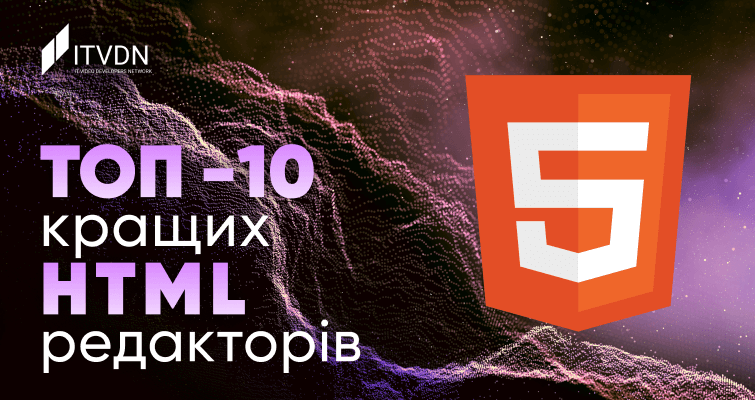
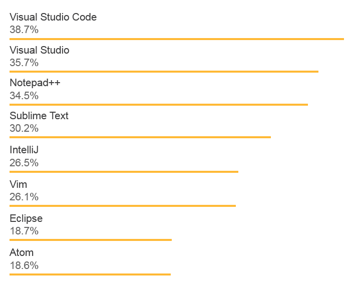

ТОП 10 НАЙКРАЩИХ HTML РЕДАКТОРІВ

Якщо спростити відповідь на поставлене запитання, HTML редактор — це програма-інструмент, яка використовується для написання основи веб-сайтів. І, незважаючи на те, що практично будь-який текстовий редактор може використовуватися для створення сайтів, це зовсім не означає, що краще використовувати звичайний текстовий редактор замість спеціально створеного інструменту розробника. Сучасні HTML редактори мають безліч вбудованих механізмів, котрі істотно спрощують роботу з сайтами. Виділення спеціальних синтаксичних конструкцій, перевірка помилок, підказка та вставка часто використовуваних елементів коду HTML, механізми автозаповнення – ці та багато інших механізмів сучасних HTML редакторів щодня полегшують роботу програмістів, верстальників та дизайнерів.
Однак редактор HTML — це зовсім не одна програма. Це група програм, кожна з яких має свій функціонал, свої особливості використання, свій набір плюсів та мінусів. Завдання такого інструменту, як HTML редактор, – зменшити витрачені вами зусилля, щоб ваш код залишався функціональним і чистим.
Які ж бувають HTML редактори? Класифікуючи їх за функціональним призначенням і можливостями, виділяють: WYSIWYG редактори і текстові редактори HTML.
WYSIWYG (What You See Is What You Get) – абревіатура редакторів цього типу перекладається як «що бачиш, те й отримаєш». Інша назва таких редакторів – візуальні редактори HTML. Фактично, завдання цього типу редакторів – надати інтерфейс редагування, в якому можна відразу побачити, як виглядатиме реалізація коду на сторінці діючого сайту в браузері. Для найпростішої роботи в редакторі цього типу не потрібне знання HTML. З роботи в такому редакторі простіше стартувати користувачу-початківцю, який не має досвіду написання коду.
Такий тип редакторів часто вбудовують у веб-сайти — для спрощення налаштування зовнішнього вигляду сайту за деякими заздалегідь написаними шаблонами або для редагування контенту сайту.
Власне, як зрозуміло з назви, цей тип HTML редакторів орієнтований безпосередньо на роботу з текстом (кодом). Щоб використовувати такий редактор, вам знадобляться знання як мінімум мови HTML. У процесі використання такого редактора ви не зможете постійно спостерігати готову реалізацію сторінки веб-сайту, що розробляється.
Проте застосування текстового редактора дає розробнику значно більше свободи, можливостей оптимізації коду та ін.
Ми розглянули, що таке HTML редактор і кілька прикладів того, коли той чи інший тип редакторів можуть використовуватися. Розглянемо декілька популярних продуктів для розроблення, і спробуємо визначити, який текстовий редактор більше підійде для вирішення ваших завдань.
Вибір інструменту розроблення – питання смаку. Кожен професійний розробник робить цей вибір, виходячи з власних уподобань, з того, як він працюватиме з HTML редактором. Однак є ряд редакторів коду, яким розробники віддають перевагу найчастіше.
Stack Overflow щорічно складає рейтинг інструментів розробників, що використовуються найчастіше. Розглянемо результати цього опитування серед веб-розробників за 2018 рік.
Випущений компанією Microsoft на основі коду Atom, Visual Studio Code має частину функціоналу IDE (Integrated development environment) — інтегрованого середовища розроблення — потужної програми, що містить окрім текстового редактора коду ще ряд механізмів, які дозволяють проводити аналіз коду, запуск його та налагодження. Часто уявляють саме цей інструмент, коли говорять про те, який функціонал повинне мати IDE для веб-розроблення. У багатьох рейтингах безкоштовних HTML редакторів саме Visual Studio Code займає перше місце — розробники надають йому перевагу все частіше і частіше. Так, наприклад, за даними Stack Overflow, цей редактор у 2017 році використовували 24% веб-розробників, а у 2018 році – вже 38,7%.
Плюси Visual Studio Code
Мінуси Visual Studio Code
Notepad++ – це текстовий редактор, що займає небагато місця в оперативній пам`яті комп`ютера. Він розроблений для комп'ютерів під керуванням Windows. Користувачі Linux можуть використовувати його через Wine. Notepad++, випущений ще в 2003 році, є перевіреним та усталеним інструментом багатьох розробників, будучи зручним текстовим редактором для HTML коду. Цей редактор поширюється як безкоштовне програмне забезпечення, а його репозиторій доступний у GitHub. Notepad++ підтримує сторонні плагіни.
Основні переваги Notepad++
Недоліки Notepad++
Ще одним прикладом чудового текстового редактора для HTML є Sublime. Ця програма постачається безкоштовно з деякими обмеженнями. Іншими словами — ви можете використовувати Sublime безкоштовно, але вам доведеться купити ліцензію, якщо ви захочете скористатися всіма функціями цього редактора.
Sublime пропонує гарну підтримку, забезпечуючи постійний вихід актуальних оновлень. Користувачі можуть додавати плагіни, створені спільнотою, або створювати власні. Для значної частини розробників використання безкоштовної версії Sublime буде цілком достатнім. Якщо вам знадобиться більше можливостей, ви зможете придбати ліцензію пізніше.
Плюси Sublime
Недоліки Sublime
WebStorm – дуже зручне середовище для web розроблення. WebStorm було розроблене компанією JetBrains на основі іншого їхнього продукту IDE IntelliJ.
Плюси WebStorm
Недоліки WebStorm
Vim (скорочення від Vi Improved) – це потужний портативний текстовий редактор з дуже багатою історією – йому вже понад 27 років. Має багатий функціонал з можливістю глибокого налаштування програми під себе. В оригінальному вигляді працює у вікні консолі. Можна використовувати версію із графічним віконним інтерфейсом – Gvim. Варто відзначити, що багато сучасних IDE — для поліпшення процесу розробки — містять емулятор функціональності Vim.
Плюси використання Vim
Недоліки Vim
Використання програми Eclipse як HTML редактору часто вважається надмірним. Будучи повноцінною та багатофункціональною системою розробки, вона, ймовірно, буде надто складною для написання коду на HTML та CSS. Повноцінно свої можливості Eclipse зможе проявити при розробці складних сайтів, підв'язаних на роботу з кількома базами даних і додатковими механізмами.
Часто Eclipse використовують для роботи зі сторінками, написаними на Java, PHP, JavaScript та інших мовах програмування.
Плюси Eclipse
Мінуси Eclipse
Атом – це порівняно новий HTML редактор. Він був випущений у 2014 році командою GitHub, і з того часу, за підтримки спільноти GitHub, значно збільшив свою популярність. Цей текстовий редактор є безкоштовним, з відкритим кодом. Цікаво, що у якості слогану для Atom використовується фраза “найбільш зламаний текстовий редактор 21 століття”, маючи на увазі, що будь-який розробник може робити свій внесок у редагування, розширення, зміну та обмін вихідним кодом програми, а також створювати власні пакети для покращення Atom.
Які можливості дає Atom
Плюси Atom
Мінуси Atom
Розглянемо ще ряд додатків, що часто застосовуються у якості HTML редакторів.
Програма Adobe Dreamweaver CC, розроблена та керована технологічним гігантом Adobe Inc., є потужним та універсальним інструментом преміум-класу. Вона обслуговує як back-end, так і front-end розроблення. Як програмне забезпечення із закритим вихідним кодом, Dreamweaver призначений для роботи в екосистемі Adobe. Adobe також надає підтримку, плагіни та функції, щоб ви завжди могли без проблем писати код.
Dreamweaver — це один із редакторів, які підтримують як текстові, так і WYSIWYG методи роботи з кодом. Багато користувачів цієї програми вважають Dreamweaver найкращим візуальним редактором коду. Таким чином, ви можете вибирати, чи ви хочете працювати з візуальним поданням сторінки або йти класичним шляхом редагування тексту.
Основні переваги Dreamweaver CC.
Недоліки Adobe Dreamweaver CC
Brackets — це програмний продукт Adobe, розроблений спеціально для дизайнерів та фронтенд розробників, котрий побачив світ у 2012 році. Цей молодий текстовий редактор, що розповсюджується, на відміну від Dreamweaver, безкоштовно, не може похвалитися великим вибором плагінів, проте відмінно працює з HTML, CSS і JavaScript – основними мовами фронтенд-розробника.
Плюси Brackets
Мінуси Brackets
HTML редактор CoffeeCup представлений на ринку як безкоштовною, так і платною версією. Незважаючи на слабку поширеність у російськомовному сегменті Інтернету, HTML редактор CoffeeCup досить популярний за кордоном. Випущений вперше ще 1996 року, до 2008 року редактор було продано вже числом 30 млн. копій.
Плюси CoffeeCup
Недоліки CoffeeCup
Завершимо наш огляд популярних HTML редакторів зручним інструментом для створення та редагування коду прямо в браузері — HTML-Online. HTML-Online є простим та зручним редактором веб-сторінок. Він, ймовірно, один з найкращих візуальних HTML редакторів серед онлайн сервісів. Завдяки сервісу HTML-Online ви зможете почати писати коди вашого нового сайту прямо в браузері, без необхідності завантажувати та встановлювати відповідну програму.
Переваги HTML-Online
Недоліки HTML-Online
У кожного практикуючого розробника є можливість самому вибрати для себе відповідний інструмент-редактор зі своїм функціоналом «з коробки» та доступними плагінами.
Ми розглянули ряд редакторів, визнаних більшістю розробників найкращими HTML редакторами. Чи зможемо вибрати серед них найкращий редактор веб-сторінок? На жаль, ні.
Як видно, для полегшення роботи фронтенд розробника існує безліч різноманітних додатків, що відрізняються як вбудованим функціоналом та дизайном, доступом до плагінів та додаткових бібліотек, так і порогом входження та доступними платформами, на яких працюють редактори. Ці різноманітні додатки – лише інструменти в руках людини, котрі застосовуються, виходячи з конкретного завдання й особистих смаків.
Не так важливо, щоб ви одразу обрали для себе один раз і назавжди зручний текстовий редактор для HTML, як важливо, щоб Ви продовжували писати нові сайти, вчилися новим технологіям та відкривали для себе нові інструменти без припинення навчання.